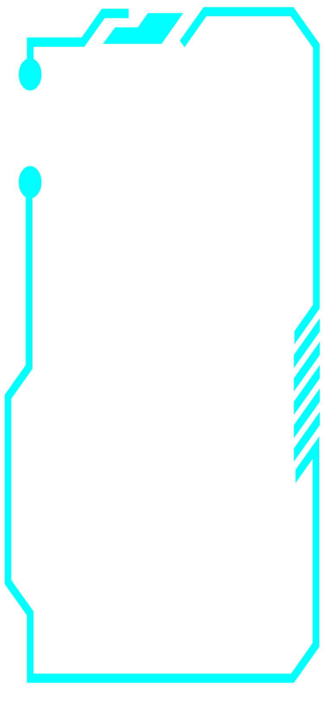
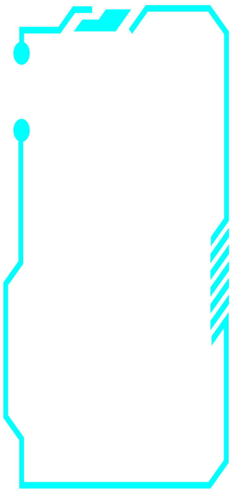

Arrived Destination:
Psyche Asteroid

-
Orbit: Once the spacecraft arrives at the asteroid, plans call for it to perform science operations from four staging orbits, which become successively closer.
-
Orbit A: Characterization
56 Days (41 Orbits) -
Orbit B: Topography
80 Days (169 Orbits) -
Orbit C: Gravity Science
100 Days (362 Orbits) -
Orbit D: Elemental Mapping
100 Days (684 Orbits)
 
